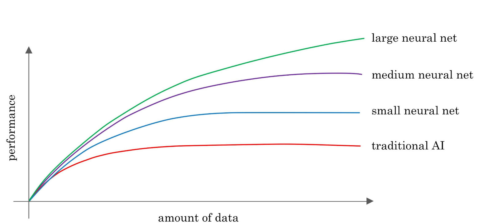

第一周测验
适用于所有人的人工智能课程 - 第 1 周
截止时间：
February 24, 12:59 AM PST
答题次数：
无限量
您的成绩：
您尚未提交。我们会保留您的最高分数。
第一周测验
1. 这些术语中哪一个最能描述当今电子邮件垃圾邮件过滤器、语音识别和其他特定应用中使用的人工智能类型？
人工通用智能（AGI）
人工智能（ANI）
2. 您认为学习输入 (A) 到输出 (B) 映射的常用人工智能技术是什么？
人工智能
无监督学习
监督学习
强化学习

3. 您想使用监督学习来构建一个语音识别系统。上图表明，为了使神经网络（Deep Learning）达到最佳性能，您最好使用：（请选择所有适用的选项）
一个大型数据集（音频文件和相应的文字誊本）
一个小型数据集（音频文件和相应的文字誊本）
大型神经网络
小型神经网络
4. 为监督学习算法获取数据的唯一方法就是人工标注。也就是说，给定输入 A，请人工提供 B。
正确
错误
5. 关于数据采集，您同意哪些说法？
只有结构化数据才有价值，人工智能无法处理非结构化数据。
某些类型的数据比其他类型的数据更有价值；与人工智能团队合作可以帮助您确定要获取哪些数据。
如何获取数据并不重要。数据越多越好。
把数据交给人工智能团队是没有用的，因为他们总能自己生产出他们需要的东西。
6. 您经营着一家生产滑板车的公司。以下哪些是非结构化数据的示例？(选择所有适用的）
踏板车发动机声音的音频文件
每辆滑板车的最高速度
滑板车图片
去年每周售出的踏板车数量
7. 假设您经营一家销售猫粮的网站。数据科学项目可能会带来哪些好结果？(请选择所有适用的选项）
洞察如何根据猫的品种更有效地推销猫粮。
近似猫大脑工作原理的神经网络。
标记为 "猫 "和 "非猫 "的大型图像数据集
幻灯片演示如何修改定价以提高销售额。
8. 根据第 4 课 "人工智能的术语 "中定义的术语，您同意以下哪些说法？(请选择所有适用的选项）
"机器学习"和"数据科学"这两个术语几乎可以互换使用。
AI 是深度学习的一种。(即所有 AI 算法都是深度学习算法）。
"Deep Learning"和"Neural Network"这两个术语几乎可以互换使用。
Deep Learning 是机器学习的一种。(即所有的 Deep Learning 算法都是机器学习算法）。
9. 人工智能公司在哪些方面做得很好？
战略性数据采集
投资统一数据仓库
发现自动化机会
以上皆是
10. 假设你想输入一张人脸图片（A），然后输出他们是否在笑（B）。由于这是一项大多数人都能在 1 秒钟内完成的任务，因此有监督学习或许可以学习这种 A 到 B 的映射。
正确
错误